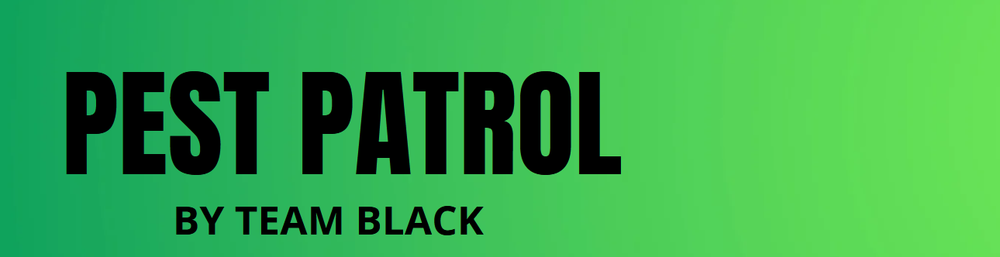

User Stories
As a community member...
- I want to add users as friends
- I want the ability to block users
- I want to know general information about various pests
- I want to know how to get rid of various pests
- I want to know how dangerous a pest is
- I want to prioritize the information I see based on its credibility
- I want to communicate with other users directly (not in a forum)
- I want to create discussion threads that are not linked to reported pest incidents
- I want to easily switch between incident location data and corresponding discussion content using the same main interface
- I want to receive auto generated tips and guides based on incident and discussion history
- I want to be given the chance to post anonymously
- I want to flag malicious posts
- I want the posts and reported incidents of blocked users to be hidden
- I want to receive notifications about new direct message activity
- I want to receive notifications on new incidents that have been reported since I last signed in
- I want to receive notifications of new activity regarding followed threads
- I want all new notifications to be consolidated and made easily accessible on the dashboard interface
- I want to receive preemptive alerts based on historical pest trends in the neighborhood
- I want to flag malicious user
- I want to see the interaction (reports submitted, past posts, etc.) history of other users
- I want to add a discussion thread to a reported pest incident
- I want to communicate with other community members about reported pest incidents
- I want to see a summarized listing of discussion threads associated with the displayed incidents from the incident map
- I want the application to be accessible through an internet browser
- I want to know the historical trends of pests in my neighborhood
- I want each user post to have a quality score
- I want to be able to rate a post favorably or unfavorably to increase/decrease its credibility
- I want users to have a reputation score based on the quality of their contributions
- I want to know the density of pests in an area
- I want to know pests I will likely encounter based on the time of year
As a Hiker/Camper...
- I want to know the density of pests in an area
- I want to know pests I will likely encounter based on the time of year
As a city...
- I want to know when an invasive species is reported in the city
As a homeowner's association...
- I want to know how many infestations have been reported in the community
- I want to know the pests associated with reported infestations
- I want to know where infestations are happening
As an outdoor business...
- I want to be alerted when a pest is spotted nearby/in my work area
As an pest control company...
- I want to see a map of nearby pest hotspots
As an administrator...
- I want to suspend accounts of users that acting inappropriately
- I want to remove content that is inappropriate
- I want to conceal flagged content from all users
- I want to view all flagged content
As an tester...
- I want to create a discussion thread and successfully link it to an incident report
- I want the dashboard to load according to my specific profile settings
- I want to switch between the Incident Map and Discussion View interfaces using the dashboard
- I want the Discussion view interface to only display discussions related to the viewable reported incidents
- I want to test the Google Maps API to ensure reported incidents are appearing in the proper location
- I want to successfully receive SMS pest alerts